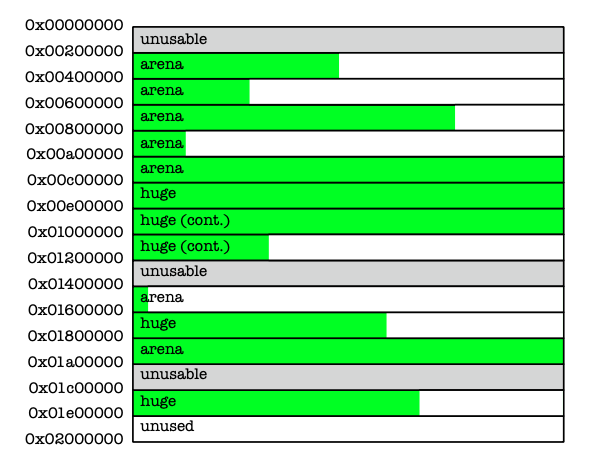
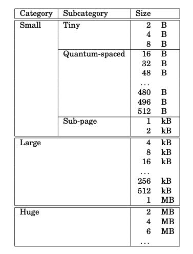

A Scalable Concurrent malloc(3) Implementation for FreeBSD
这篇文章简单地介绍了jemalloc(Jason Evans)的实现。
介绍了几个现代内存分配器和jemalloc的特点：
- 过去评价内存分配器从分配时间和内存占用量两个指标入手，但是撇开应用看这两项是远远不够的。
- 必须针对多核/多线程场景进行优化，并且cache locality非常重要。
- 内存占用依然是最主要的问题，可以作为衡量cache locality的代理。jemalloc首先试图减少内存分配，再次基础上优化cache locality.
- jemalloc在内存分配上并不解决false sharing的问题，这个还是需要用户自己做padding来避免。
- 为了解决多线程竞争减少cache sloshing, jemalloc开辟了多个arena. 每个线程会使用round-robin的方式绑定到某个arena上。
- 使用round-robin方式是因为thread id分配可能是不均匀的，但是使用RR需要TLS/PIC code支持。如果不支持PIC或者线程库不支持TLS的话，那么只能用thread id hashing的方式。
jemalloc将内存地址按照2MB切换成为chunk，一个chunk被一个arena管理。对于超过1/2 chunk size的分配称为huge alloc, 这个是直接分配连续的chunks, 然后将指针挂在到全局红黑树上。

剩下small 和 large alloc. 其中large alloc是4KB以上的，以下的按照的size classes进行分配。怎么管理这个chunk呢？首先将chunk切分成为page(4KB), 然后使用buddy algorithm管理起来，连续的pages称为run. 这个run信息存储在chunk head. 我们计算以下，2MB chunk可以切分称为512个pages = 2^9. 使用buddy algorithm使用2^10=1K个node就可以管理起来。一个node可能4-8字节可以管理，这样就只需要占用头部1-2个page即可，还是比较紧凑的。

对于small alloc来说，jemalloc没有使用free list管理，因为这样容易造成的internal fragmentation（不过我也很好奇是否真的会分配到2B），而是使用bitmap来管理。假设一个page 4KB全部用来分配2B的话，那么有2^11 / 8 = 256字节的bitmap，多个run的会用来管理2B的分配，最后只要一个page来存储这些bitmap就行。
实验对比部分没有怎么细看。jemalloc为了说明自己优于dlmalloc, phkmalloc等等这些在单核时代产生的分配器，在进行测试时必须同时证明：对于单核来说自己不差，对于多核来说自己的扩展性会更好。